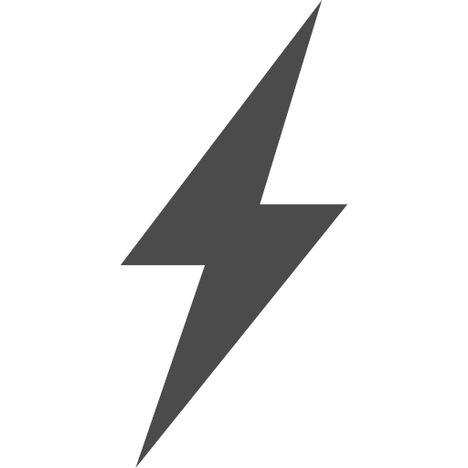

SIXClient
黒丸のExploit活用した軽量かつ機能的なClientです 近未来的なデザインと使いやすさを追求しています。
 Discordに参加
Discordに参加
特徴

ハイパフォーマンス
最適化されたエンジンによる高速な処理と応答性
- 高速起動時間
- メモリ使用量の最適化
- マルチスレッド処理
セキュリティ
最新のセキュリティ技術を採用し、安全な環境を提供
- データ暗号化
- Log4j2に対する完璧な対策
- リアルタイム監視
カスタマイズ性
ユーザーのニーズに合わせた柔軟なカスタマイズが可能
- カスタムGUIの変更
- プラグイン対応
- 設定の保存と同期

サポート
24時間365日のサポート体制で安心
- ライブチャットサポート
- メールサポート
- コミュニティフォーラム
FAQ
Q. マインクラフトの対応versionは何ですか？
A. バージョンは最新の1.21に対応しています。
Q. これはチートですか？
A. いいえ、これはPlayerのゲーム体験を改善するUtilityModです。
Q. サポートはどのように受けられますか？
A. Discordサーバによるサポート、メールサポート、コミュニティフォーラムを通じてサポートを受けられます。
変更履歴
SIXClientのすべての注目すべき変更は、この変更ログに記録されます。
[v0.0.1] - 2025年1月25日
- Minecraft 1.21のサポートを追加しました
- ClickGUIを一新しました
- NoteBotモジュールを追加しました
動作環境
最小要件
- OS: Windows 10 (64-bit)
- Processor: Intel Core i3
- Memory: 2GB RAM
- Storage: 4GB 空き容量
- Graphics: DirectX 11対応グラフィックス
- Network: ブロードバンドインターネット接続
推奨環境
- OS: Windows 11 (64-bit)
- Processor: Intel Core i5
- Memory: 8GB RAM
- Storage: 10GB 空き容量
- Graphics: DirectX 11対応グラフィックス
- Network: ブロードバンドインターネット接続
使用者の声
"SIX Clientは本当に素晴らしいです！ゲームのパフォーマンスが劇的に向上しました。"
- ユーザーA
"セキュリティ機能が充実していて、安心して使えます。"
- ユーザーB
"カスタマイズ性が高く、自分好みに設定できるのが嬉しいです。"
- ユーザーC
"サポートが迅速で、問題がすぐに解決しました。"
- ユーザーD
"使いやすさとデザインが最高です。毎日使っています。"
- ユーザーE
"このクライアントを使い始めてから、彼女が出来て年収2000万円超えてIQテストで100点取れました！"
- 潜在的アホ
 Trustpilotでレビューを見る
Trustpilotでレビューを見る